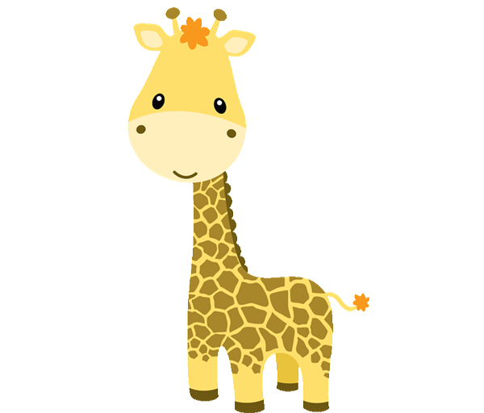
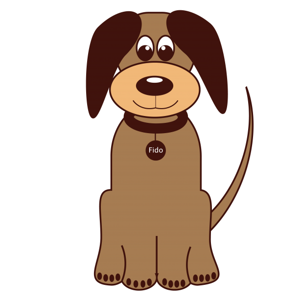

Leão
Majestoso felino com uma juba dourada, o leão é o rei das savanas africanas.

Girafa
Elegante e graciosa, a girafa é um dos animais mais altos do reino animal.

Cachorro
Leal e brincalhão, o cachorro é um companheiro fiel e cheio de energia.
Gato
Misterioso e independente, o gato é um companheiro felino encantador.
Macaco
Brincalhão e ágil, o macaco é um dos animais mais sociáveis e curiosos da natureza.